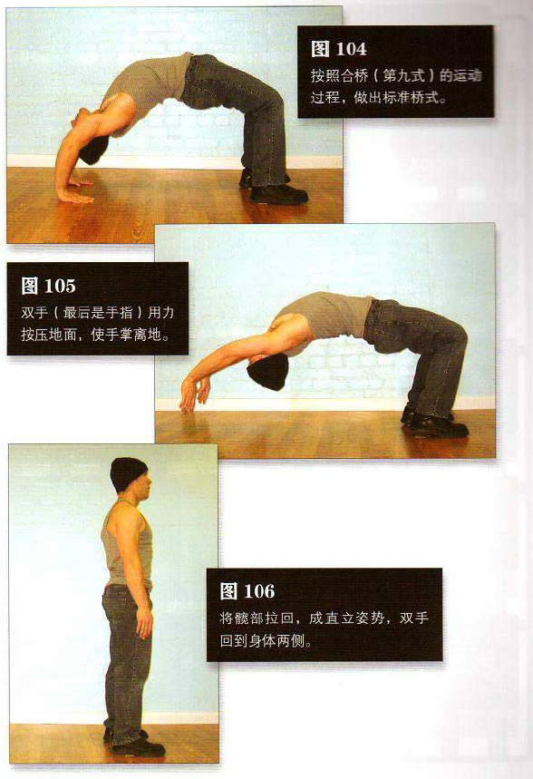

直立，按照合桥（第九式）的运动过程，做出标准桥式（图 104）。双臂伸直，同时弯曲膝盖，将体重转移至双腿。双手（最后是手指）用力按压地面，使手掌离地，同时继续向前转移体重。此时，如果你的后背足够柔韧以维持高度的弓形，腹部又足够有力，在你起身时手指会离地（图 105）。这个向上的运动过程应该是平缓向前转移体重的结果，而非用双手以爆发力推地面的结果。继续向上运动，双手绕过肩部收回，颈部也收回，与身体成一直线。最后，将髋部拉回，成直立姿势，双手回到身体两侧。这是该动作的结束姿势（图 106）。
从直立姿势做成标准桥式，然后把自己从下向上拉回成直立姿势，就是一次完整的动作。重复练习，保持正常呼吸。
初级标准：1 组，1 次
中级标准：2 组，各 3 次
高级标准：2 组，各 30 次